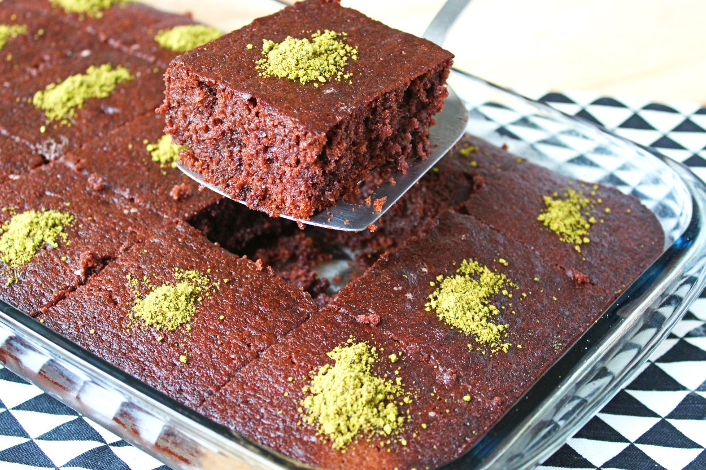
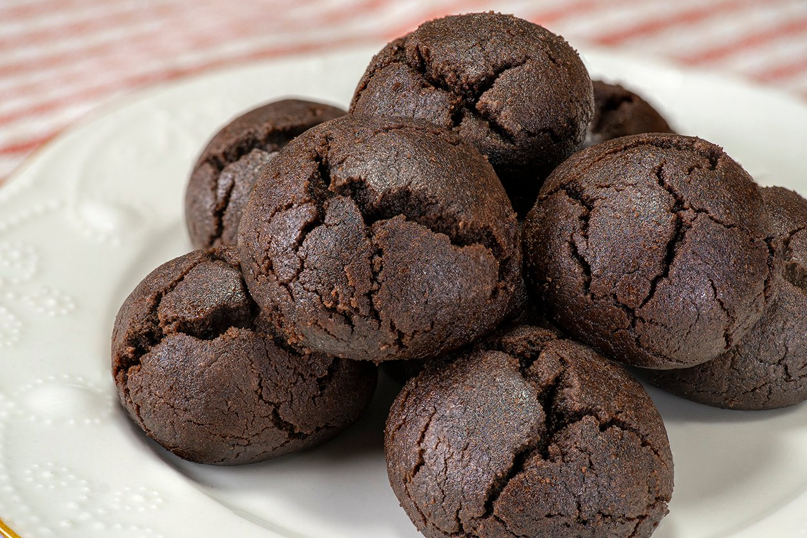
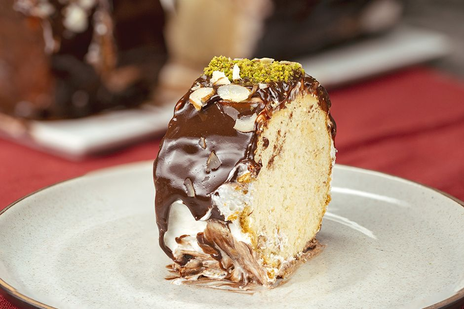

Borcamda Kakaolu Kek
Malzemeler:
Kek harcı için:
- 2 adet yumurta
- 1 su bardağısüt
- 1 su bardağıtoz şeker
- 1 su bardağısıvı yağ
- 1,5 paketkabartma tozu
- 1 paketvanilya
- 3 tepeleme yemek kaşığıkakao
- 2 su bardağıun
Sosu için:
- 1,5 su bardağısüt
- 1/2 çay bardağısıvı yağ
- 3/4 su bardağıtoz şeker
- 2 yemek kaşığıkakao
Yapılışı:
Yumurta ve şekeri bir kaba alın.
Mikserle köpük olana kadar çırpın. Süt, yağ, kakao koyup çırpmaya devam edin.
Elenmiş un, kabartma tozu ve vanilya koyup spatula ile karıştırın.
Homojen kıvamlı bir kek harcı elde edin. İçinde un topakları kalmamasına özen gösterin.
Dikdörtgen bir borcama döküp önceden ısıtılmış 180°C’ fırında yaklaşık 35 dakika pişirin. Kontrollü pişirip kürdanla kontrol edin ve kürdan testi temiz çıkınca kapatın.
Süt, şeker, yağ, kakaoyu bir tencerede kaynatın ve altını kapatın.
Keki fırından çıkarıp dilimleyip 10 dk dinlendirip sosu dökün.
Bir iki saat buzdolabında dinlendirip servis edin.
Afiyetler olsun!

Brownie Kurabiye
Malzemeler:
Hamuru için:
- gramtereyağı
- 1 adetyumurta(büyük boy)
- 1 çay bardağısıvı yağ
- 3 su bardağıun
- 1 çay bardağıpudra şekeri
- 4 yemek kaşığıkakao
- 1 paketvanilin
- 1 paketkabartma tozu
Şerbeti için:
- 1 su bardağısu
- 1 su bardağıtoz şeker
- 2 damlataze sıkılmış limon suyu
Yapılışı:
Hafif ıslak bir kıvam alacak kurabiyelerin şerbeti için; derin bir tencereye aldığınız su ve toz şekeri kısık ateşte kaynamaya bırakın. Kaynamaya başlayıp koyu bir kıvam alan şerbete taze sıkılmış limon suyunu ekleyip ocaktan alın. Ilınması için oda sıcaklığında bekletin. Kurabiye hamuru için; tereyağı, yumurta ve sıvı yağı karıştırma kabına alın.
Un, pudra şekeri, kakao, vanilin ve kabartma tozunu ekleyip ele yapışmayacak bir kıvama gelene dek yoğurun.
Hazırladığınız kurabiye hamurundan ceviz büyüklüğünde parçalar kopartıp avuç içinizde yuvarlayarak şekil verin.
Yağlı kağıt serili fırın tepsisine aralıklı olarak yerleştirin. Önceden ısıtılmış 200 derece fırında, 10-12 dakika üzerleri hafif çatlayana kadar pişirin.
Fırından çıkardığınız kurabiyeleri, oda sıcaklığında soğumuş olan şerbete batırın. Kurabiyeler şerbeti iyice çekene dek bekletin.
Servis tabağına aldığınız kurabiyeleri sevdiklerinizle afiyetle tüketin!

On Dakika Pastası
Malzemeler:
- paketkrem şanti
- 1,5 su bardağısoğuk süt
- 1 paketçikolata kremalı bisküvi(büyük boy)
- 1 su bardağısüt(bisküvi batırmak için)
- 1 pakethazır çikolata sosu
- 2 yemek kaşığıtoz antep fıstığı
- 2 yemek kaşığıfile badem
Yapılışı:
1 paket krem şantiyi geniş bir kaseye alarak 1,5 su bardağı soğuk sütle iyice kabarana kadar mikser yardımıyla çırpın.
Başka bir kaseye bir su bardağı süt koyun. Bisküvinin iki tarafını da süte batırın.
Ardından süte batırdığınız bisküvinin üzerine hazırladığınız krem şantiyi minik bir spatula veya yemek kaşığı yardımıyla sürün.
Bir bisküvi daha alarak süte batırın ve krem şanti sürmüş olduğunuz ilk bisküviyle birleştirerek birbirine yapıştırın.
Bisküvileri bitirene dek aralarına krem şanti sürün ve birbirine yapıştırmaya devam edin.
Hazır çikolata sosunu pişirin.
Birbirine yapıştırdığınız bisküvileri servis tabağına alın ve kalan krem şanti ile açık kısım kalmayacak şekilde tüm dış yüzeyini kaplayın.
Bir kepçe ile çikolata sosunu krem şanti katmanının üzerine dökün. Ön ve yan kenarların kaplanana kadar sosu dökmeye devam edin.
Üzerini toz Antep fıstığı ve file badem ile süsleyerek servis edin.